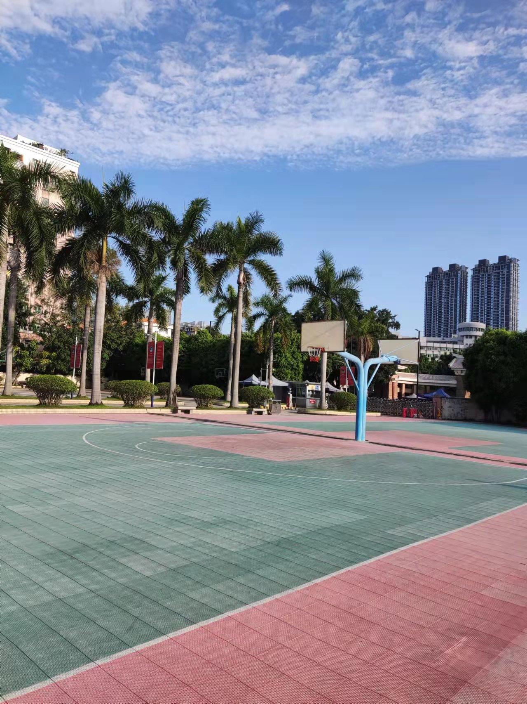
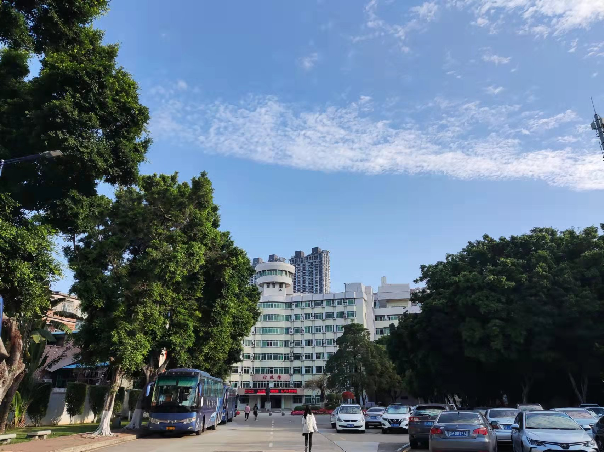
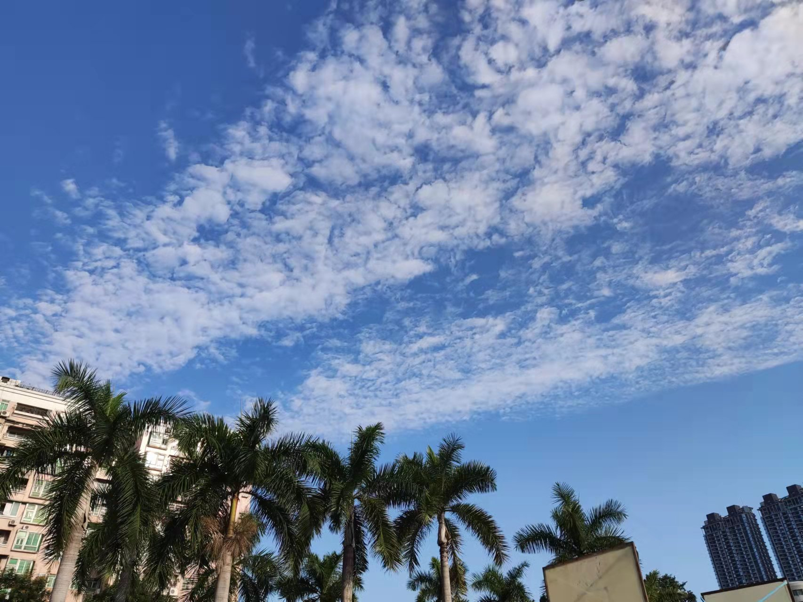

今年九月我怀着激动的心情上了大学。我是一个复读生，对于每个复读生最大的愿望就是能考上心仪的大学。而我的愿望只是希望能上大学，我迫切的希望逃离高四那煎熬的生活，还有那种整天在题海中奋斗的艰辛。而今年九月我实现了我的梦想，我带着梦想和激情开始了我的大学生活。
记得报到的那一天，我怀着满腔热情在学校的签名墙上写下了我的名字。我期待着在这里开始我的大学生活。我将会遇到怎样的一群人，又该和他们发生怎样的故事呢？
可现实和想象总是有很大的区别的。大学可谓是消磨了我对以前事物的热爱啊！我记得我以前很喜欢打球的，每次经过球场都会忍不住的在那里上去场玩玩，结果现在球场就在宿舍楼下我也懒得下去打球了。我记得我以前对校运会充满热爱的，现在也懒得报名了。我记得我以前渴望上场打辩论赛的，结果现在打了一场就不想上了。我渐渐的被生活消磨了耐心。
我想了很久为什么大学和我想象的不一样，后来我想明白了，大概是因为人员的不同吧！以前我喜欢打篮球是因为每到下课都会有一群人和我一起冲到篮球场上，现在一个宿舍就我一个喜欢打篮球的。以前我热衷于校运会是因为我会有一群人在背后为我默默加油，现在即使是一个班的，没有强制的参加的话大家都会忙着做自己的事。大学啊！本该就是这样，你的接受一群去和你风格完全不一样的人相处。毕竟不是每个人都那么幸运能遇见一群和自己性格爱好一样的一群人。
后来我也习惯了大学的生活并慢慢的被同化了，只是偶尔在经过篮球场时会想起那个每次经过篮球场都会来一次空气投篮的少年，只是偶尔在踏上跑道的那一刻会想起那个冲过终点被人扶住的少年。其实我并不是说现在的生活不好只是感觉自己好像背叛了那个十几岁的少年。那个曾经为了打球而逃课的少年不会想到现在路过球场的他只剩下了惋惜，那个曾经在校运会上赢得喝彩于欢呼的少年不会想到将来有一天校运会到来了他却没有参赛的动力了。
其实我知道这其中大部分原因都归结于自己，但我好像真的没耐心去找回那个少年了。那个少年不会知道在他对篮球失去热情以前他经历了什么，是无数个傍晚一个人投球的寂寞，是班级赛里三连败连小组赛都没出。那个少年啊！正在为没参加院运会而遗憾，可那个少年真的不确定在他冲过终点线的那一刻有没有人在等他！
其实刚开始想写这篇文章是为了提醒一下以后的自己在做选择是要认真考虑清楚，并且决定以后就不要想没选的哪一项的路了。